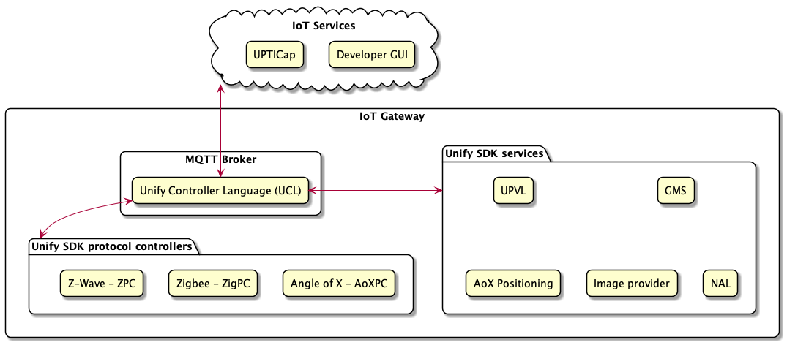

- Generated on Fri Oct 8 2021 09:58:34 for Unify SDK User Guide by
 1.8.20
1.8.20
|
Unify SDK User Guide
1.0.2
|
Latest released version of the Unify SDK Overview is available online here.
The Unify SDK provides software source and binary packages for Raspberry Pi 4 to help build an IoT gateway product. The Unify SDK enables an IoT service to control and manage end nodes in several wireless PHY radios (e.g., Z-Wave, Zigbee, and so on) supported by Silicon Labs. The Unify SDK uses the Unify Controller Language (UCL) as an internal abstraction layer to seamlessly control various end nodes that are enabled with multiple wireless PHY radios. The detailed architecture of the Unify SDK is discussed in the Unify SDK Specification.
The Unify SDK uses Unify SDK library to decouple API modules from the PHY drivers. This facilitates code reuse and enables easily adding new high-level APIs without the need to modify the PHY drivers. The library provides a number of components that simplify the task of writing a PHY driver also known as a Protocol Controller.
All of these API references points to latest version online. Specific versions of the APIs are located in the docs folder in the source repository.
A Unify gateway consists of a Message Queuing Telemetry Transport (MQTT) broker and a number of MQTT clients. The Unify SDK uses the Mosquitto MQTT broker.
The Unify MQTT clients can be grouped into several applications:

The Unify SDK was previously known as Unified IoT Controller or UIC for short. The old name can still be found in some parts of the SDK.
The Unify SDK contains the following core components:
The Unify SDK currently includes two protocol controllers:
Each protocol controller interfaces with its radio hardware and implements a translation between its own wireless protocol and the Unified Command Language (UCL), which is defined in the Unify SDK Specification. In addition, these protocol controllers implement best practices regarding message delivery, and adherence to regulatory requirements. Protocol-specific implementation details can be found in the user guide for each protocol controller.
The UPVL serves the SmartStart Provisioning list to perform SmartStart Security 2 (S2) inclusions and maintains the ucl/SmartStart MQTT topic.
ANGEL is an application that manages groups and bookkeeping between protocol controllers, and also publishes group state changes to the ucl/by-group MQTT topic.
OTA Image Provider is an application that announces OTA images available in OTA storage and publishes OTA binary on request.
Currently, one IoT service is provided, as follows:
The dev_ui service is a graphical user interface provided for operating and provisioning IoT devices using UCL. The dev_ui can be used as a reference for basic Unify concepts, such as device provisioning and control. The user interface is provided strictly for test and demonstration purposes only and is not suitable for production.
This section describe how to install the Unify SDK components on a Raspberry Pi 4 (RPi4) and test basic functionality.
If these prerequisites are not fulfilled, follow the setup instructions in the Official Raspberry Pi User Guide, and ensure a supported radio module is attached to your RPi4.
First, download the released debian packages from the github release page, and place them in a folder called deb-packages.
Copy all the packages to your RPi4 and login via ssh:
<pi_address> is the address of your RPi4.
Once logged into the Raspberry Pi, the easiest way to install the Unify components on the Raspberry Pi is to install all packages using the apt command as this will also fetch dependencies:
Use sudo apt reinstall ./deb-packages/*.deb to update previously installed packages to a newer version. Repeated use of apt install has been known to skip updating some packages.
If this is the first time the Unify SDK is installed, you will be prompted with configuration options.
After setting the first-time configuration options, configure system to restart Unify components automatically on every boot with the following commands:
The Unify dev_ui can be accessed from a browser on http://raspberrypi.local:3000.
Note that the Unify user interface needs TCP access to the port 3000 and 1337 on the Raspberry Pi.
See the Dev-UI manual for more information about using this interface.
Use the command following command to get the latest sources.
The sources can also be downloaded from a .tar.gz file on the github release page.
Please read the Developer guides for each component on how to build.
All individual Unify components communicate via MQTT. In this reference implementation, the Mosquitto MQTT broker is used which does not support clustering. As a result, all nodes connect to a single central broker.
MQTT implements a publisher-subscriber model, where all payloads are published to topics to which zero, one, or many clients can subscribe to. By default, publishers can publish to any topic and all subscribers can subscribe to any topic. MQTT has the notion of access-control but that functionality is currently not used by Unify.
A publisher does not get notified (by the broker) if a subscriber has received its message. All QoS functionality is handled by the broker.
MQTT has the notion of message-retention, i.e., a message can be retained on a topic and delivered to any future subscribers. Only a single message is retained on a given topic at a time. Publishing an MQTT-message with an empty (zero bytes) payload to a topic will clear its previously retained message.
In Unify, all message payloads are JSON-objects. Some of the Unify topics (e.g., commands) may not require any data, but they will require at least an empty JSON object (e.g., {}).
The purpose of this section is to give advanced users information about the communication flow between the Unify components and the physical IoT devices. A couple of use cases are provided with sequence diagrams describing the frame flow. The examples require the Mosquitto command-line utilities to be installed.
For a more basic introduction, see the Dev-UI.
In the following example, the message flow for including a non secure Z-Wave device is considered.
To start with, locate the Z-Wave Protocol Controller. All protocol controllers can be found by subscribing to /ProtocolController/NetworkManagement and the /State topictMQTT topics.
On your terminal, you will see something like the following:
Here, only one controller is connected to the broker. The unique ID (unid) of the controller is zw-C6739552-0001. You can see from the zw prefix that this is a Z-Wave controller where the Z-Wave home ID of the controller is C6739552 and the controller node ID is 1.
Keep the mosquitto_sub command running. Now, you will put the Z-Wave controller in inclusion mode using another terminal:
First, you see that the ProtocolController/NetworkManagement topic changes to the following:
When you activate the device, a new /State topic appears, as follows:
Shortly after, you see the /State topic and ProtocolController/NetworkManagement topics change.
The device has now been included.
After this device has been included, it can be operated by sending the OnOff cluster commands. For example, the following topic and payload will turn on the light:
To build an IoT Service from scratch, it is recommended to follow the steps below. IoT Services come in many forms, and exact steps will depend on the detailed requirements of the IoT Service.
The Unify SDK provides a nubmer of C-based components that are candidates for re-use in IoT Services. They are listed below.
The UPVL and ANGEL applications use the shared components and are good examples to peruse. They can be found in the Unify source code in the applications/angel/ and applications/upvl/ directories.
The Unify SDK is at the moment only implemented for the Linux OS. The table below shows the resource usage of the individual components measured using Valgrind on a i686 architecture, compiled without debugging information.
| Component | Flash | RAM |
|---|---|---|
| libuic | 4085 kb | NA |
| uic-zigpc | 1880 kb | 1900 kb + 8 kb pr node |
| uic-zpc | 5888 kb | 1500 kb + 8 kb pr node |
| uic-angel | 3220 kb | 1000 kb |
| uic-image-provider | 3281 kb | 1000 kb |
| uic-upvl | 3339 kb | 1000 kb |
| uic-dev-gui | 95 MB | 1000 kb |
The SDK depends on the following debian packages:
Porting the Unify SDK to new platform using Debian Linux should be straight forward. However, if components are ported to other Linux distributions it may be necessary to update the startup scripts of the components. The Debian packages provided with the Unify SDK all uses the system service systemd which takes care of startup and shutdown of the components. For example, the file uic-zpc.service is as systemd config script. When porting to a new Linux system the systemd config files should be used for reference. It is very important that all the Unify components runs as a dedicated system user to prevent attackers from compromising the entire system. Also note that most components need write access to parts of the filesystem. The default path for writing files is /var/lib/uic.
systemd services. To get a status overview of all installed Unify components, run the following command:The output of this command will tell if the service is loaded and/or is active:
systemd. In the terminal journalctl is able to print the collected logs from all Unify components. Getting the log of, for instance uic-upvl, is done via command: Note: database paths can vary depending on your configuration
uic-dev-gui-api and uic-dev-gui-server. (See previous questions how to print the status)It outputs the configured rf_region:
run:
Replace the serial argument with the port the Z-Wave controller is connected to.
mqtt explorer can give more insights in your Unify network.Change LIBUIC_DIR to match your path.
systemd service. Advised is to run ZPC with a database path that is writable in this case: Copyright 2020 Silicon Laboratories Inc. www.silabs.com
The licensor of this software is Silicon Laboratories Inc. Your use of this software is governed by the terms of Silicon Labs Master Software License Agreement (MSLA) available at www.silabs.com/about-us/legal/master-software-license-agreement. This software is distributed to you in Source Code format and is governed by the sections of the MSLA applicable to Source Code.
| Name | Usage | Link | License |
|---|---|---|---|
| Mosquitto | for MQTT communication | https://mosquitto.org | EPL/EDL |
| Contiki | This is used to implement message queues and timers | https://github.com/contiki-ng/contiki-ng/wiki | 3-clause BSD |
| Editline | for console UI | https://sourceforge.net/projects/libedit/ | BSD |
| Sqlite | for persistent storage | https://www.sqlite.org/copyright.html | public domain |
| Boost | logging, data structures, config files and json | https://www.boost.org/LICENSE_1_0.txt | Boost |
| nlohmann/json | json | https://github.com/nlohmann/ | MIT |
| CMock | Unittest | https://github.com/ThrowTheSwitch/CMock/blob/master/LICENSE.txt | |
| Unity | Unittest | https://github.com/ThrowTheSwitch/Unity/blob/master/LICENSE.txt | |
| React | User interface | https://github.com/facebook/react/blob/master/LICENSE | MIT |
| React License | User interface | https://github.com/react-icons/react-icons/blob/master/packages/react-icons/LICENSE | Misc TBD |